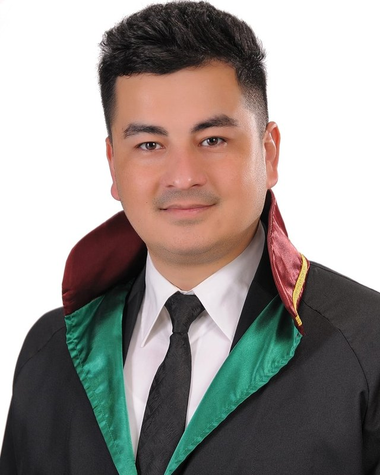
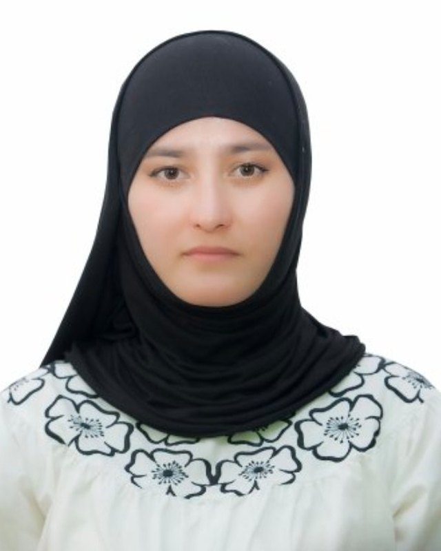
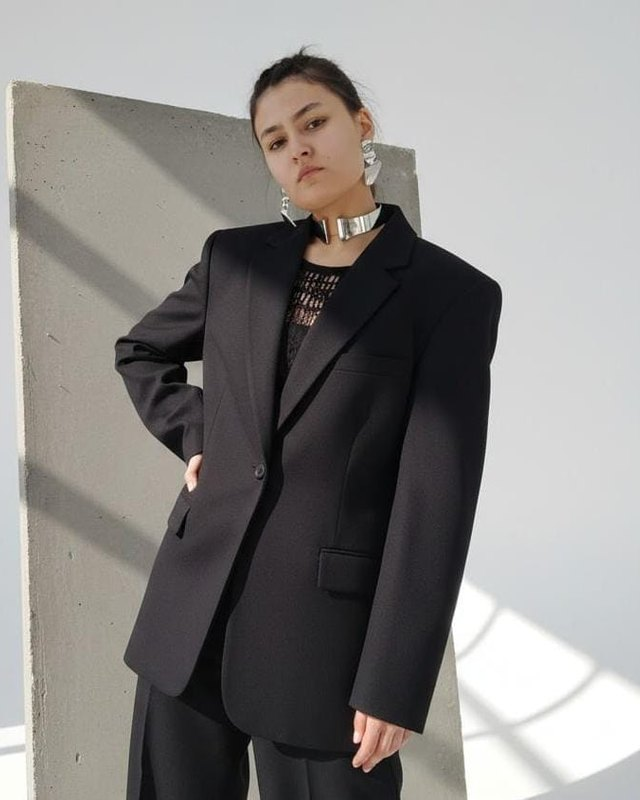
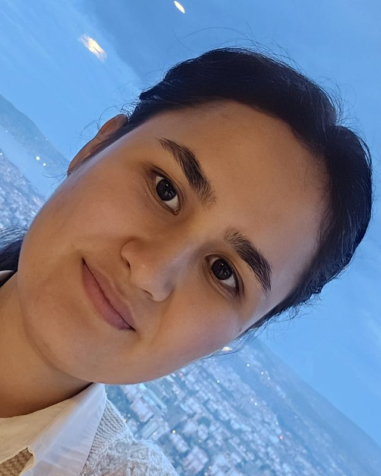
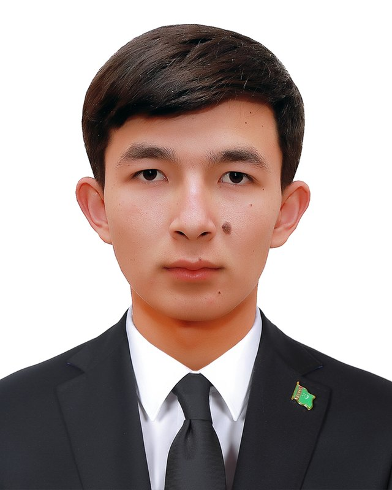

A professional team guiding international students in law, education and life in Turkey.

Graduate of İnönü University Faculty of Law (Malatya), registered attorney at the Istanbul Bar Association. Founder and owner of Al Azim, providing professional services in university applications, student and work visas, residence permits and international consulting.
av.myratpermanov@gmail.com +90 534 689 84 93
Graduate of the Turkmenistan Humanitarian University in Journalism and Translation. Serves as Chairwoman of the Board and Company Officer, providing professional consulting on university applications, enrollment and education planning for international students.
+90 544 151 99 98
Software Development student at Istanbul Bilgi University. Coordinates document tracking, application processes, residence permit applications and administrative operations — delivering fast, organized and solution-focused service.
alazimdanismanlik@gmail.com
Nursing student at Istanbul Bilgi University. Experienced in university enrollment processes, student counselling and guidance. Provides Turkish translation support so international students can manage their education and application processes smoothly.

Logistics Management student at Istanbul Gelişim University. With experience in studio production and digital content, he manages the company's corporate media: reels, video editing, content planning and visual design.
alazimstudioproduction@gmail.comContact us today and let's start your acceptance process at universities in Turkey — free application, no exams.